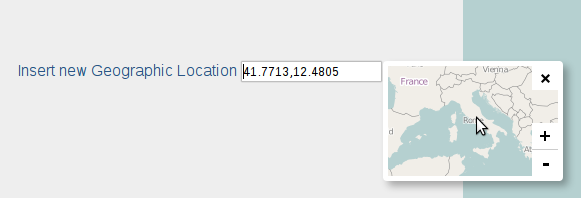

leaflet locationpicker
Simple location picker with Leaflet map
Features
Custom location format, lat,lon separator and precision
Pick Location Latidute,Longitude clicking on map
Bind multiple events or single picker callback
Load picker map from preselected location
Bind callback on location picked
Enable disable location marker
Custom map baselayer
Code repositories
Github.com
Node Packaged Module
Homepage
https://opengeo.tech/maps/leaflet-locationpicker/
Download
Dev Pack (.zip)
Examples
examples/simple.html

Labs
• ©
Stefano Cudini
For questions and bugs
I recommend you to
create New Issue
on Github repository.
This is a micro discussion area for methods of implementation.